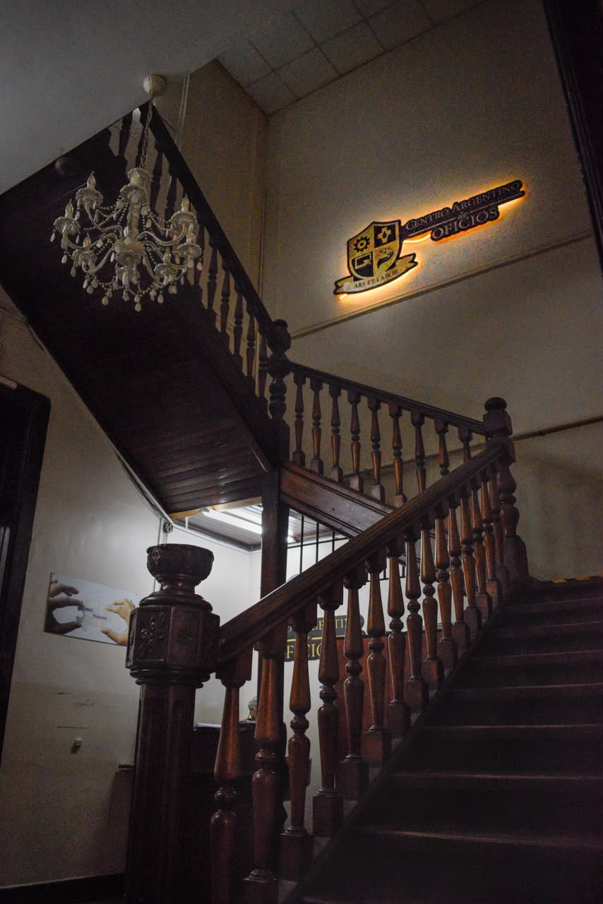
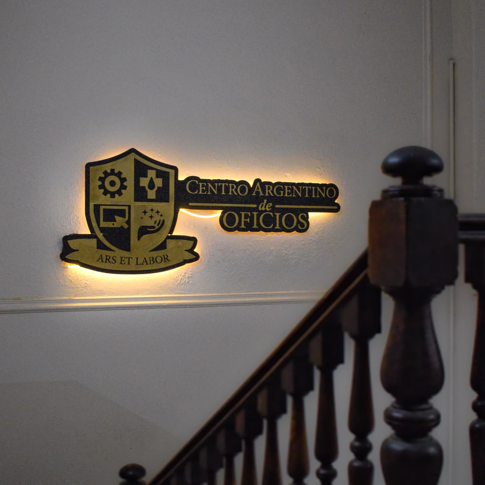
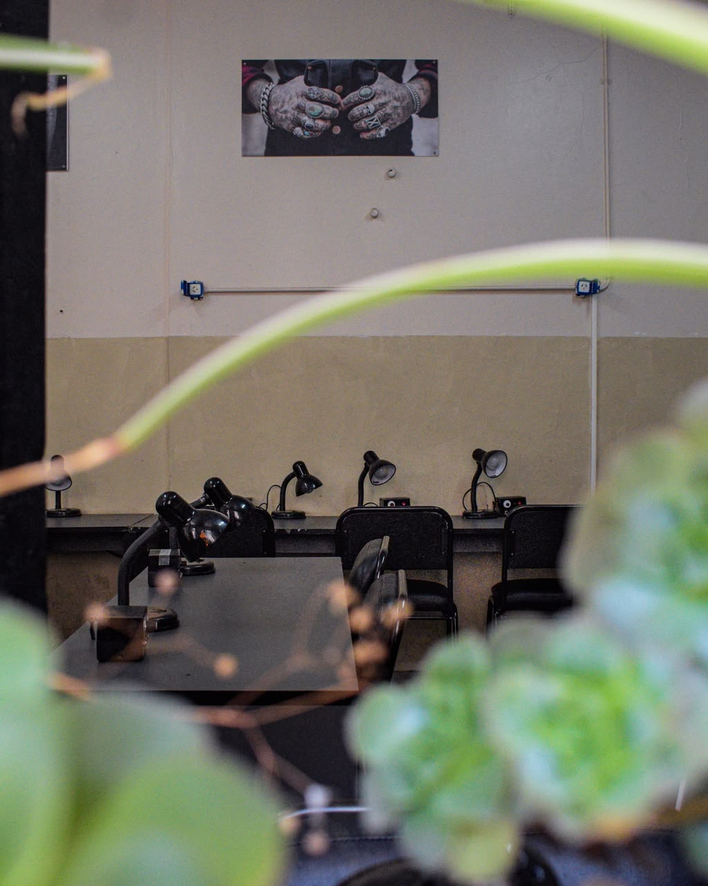
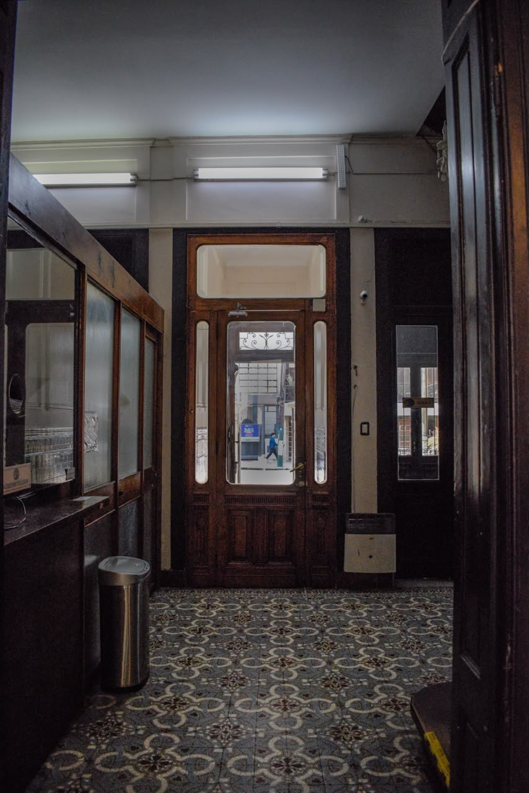

Aprendé un oficio.
Construí tu futuro.
Conocé nuestras capacitaciones y encontrá una propuesta para dar tu próximo paso laboral.
Encontrá tu próximo curso
Explorá las propuestas y consultá por horarios, próximas fechas de inicio y certificaciones.
Cursos intensivos
Capacitaciones enfocadas en técnicas y conocimientos específicos.
Cada certificación tiene un costo adicional que varía según la entidad. En las certificaciones CAIM de Refrigeración y Aire Acondicionado y Aire Acondicionado Intensivo, el costo incluye la matrícula de instalador. En Extraccionista de Laboratorio, la certificación AATALAC incluye el carnet RUDEA. Consultá valores y condiciones por WhatsApp.
Un lugar para aprender
Conocé el Centro Argentino de Oficios a través de imágenes del establecimiento.




Conocé nuestras instalaciones
Un vistazo al espacio donde se desarrollan las propuestas de formación.
¿Quieren capacitarse en grupo?
Si son 5 personas o más, consulten por propuestas especiales para grupos.
- Descuentos y bonificaciones
- Alternativas según la capacitación
- Posibilidad de acceder a becas totales
Los beneficios están sujetos a consulta y disponibilidad; no son automáticos ni están garantizados.
Consultar por grupos ↗Tu secundario, un nuevo comienzo
Una propuesta para quienes quieren retomar y completar sus estudios secundarios. Consultá por la modalidad y recibí orientación personalizada.
Los requisitos y detalles de inscripción se informan personalmente por WhatsApp.
¿Tenés dudas? Hablemos.
Consultá por duración, horarios, próximas fechas de inicio y certificaciones disponibles.
Escribir por WhatsApp ↗